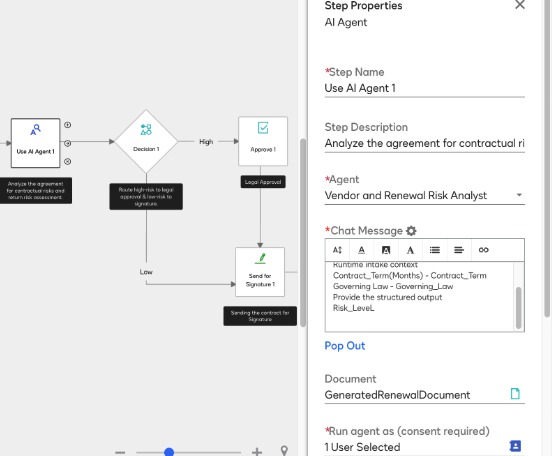
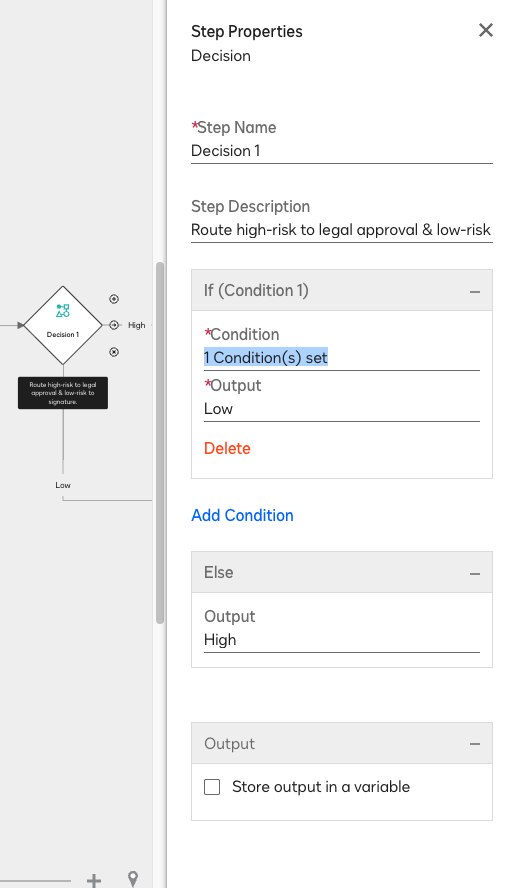
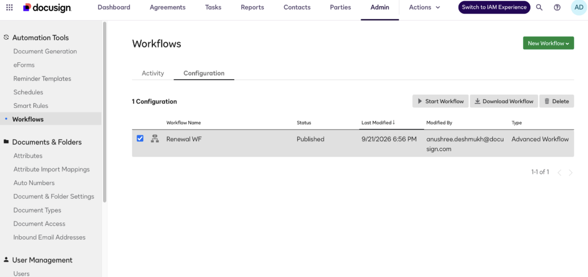
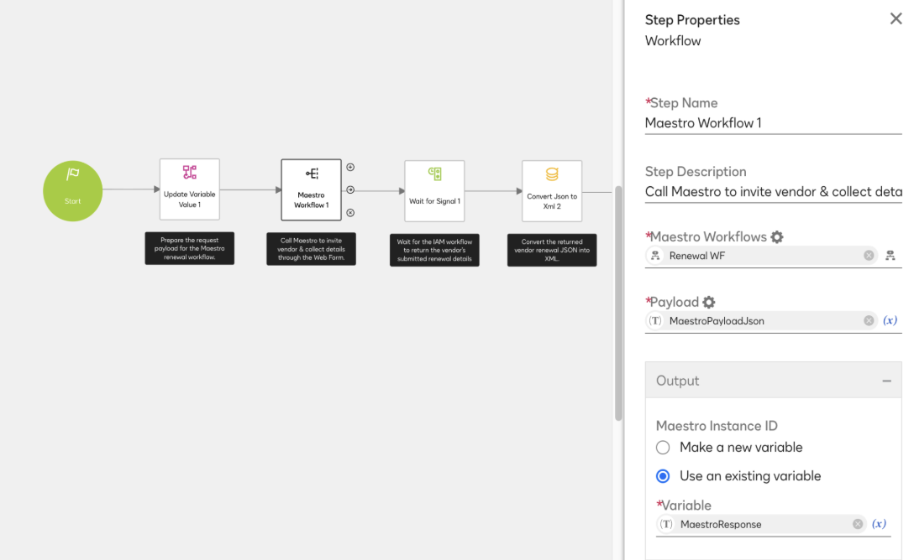
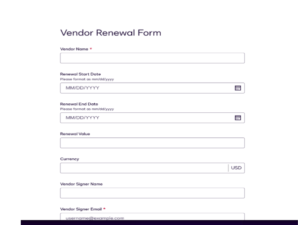
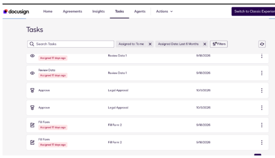
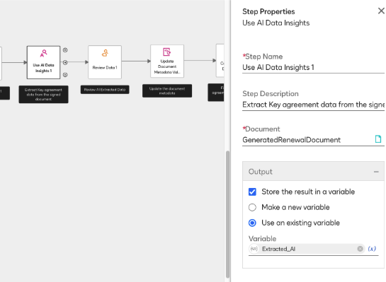

Agent Studio 202 · MSA Scenario Outline
1 What this scenario covers
At Fontara, the vendor contracts onboarded through Agreement Desk are now approaching renewal. Instead of starting a new email thread, CLM automatically creates a renewal request and sends the vendor a renewal form through IAM.
The vendor’s responses are used to generate a draft renewal contract in CLM. The same Risk Analyst agent reviews the draft and assigns a risk score. LOW-risk renewals go directly to the vendor for signature. HIGH-risk renewals are routed to Legal, where AI-Assisted Review analyzes the agreement and proposes fallback clauses before approval.
Once signed, the completed renewal contract is processed by AI for data extraction. CLM applies the extracted attributes, stores the agreement in the appropriate folder, and synchronizes the contract with IAM Agreement Manager—creating a complete, auditable renewal process from intake through post-signature management.
0.2 Renewal flow
0.3 Learning objectives
Create a renewal request in CLM, collect updated vendor information through an IAM renewal form, and generate a draft renewal agreement.
Invoke the published Risk Analyst agent to analyze the renewal draft, extract key terms, assign a risk score, and route the agreement based on that result.
Extract data from the executed agreement, apply CLM attributes, store the agreement in the appropriate folder, and synchronize it with IAM Agreement Manager.
0.4 Products enabled
- Workflow Builder - enabled, with permission to create and publish workflows.
- Agent Studio and agents-in-workflows - enabled for your partner sandbox. A published Risk Analyst agent is available for this workshop.
- CLM Use AI Agent step - available in the workflow step list.
- CLM-IAM interoperability - enabled.
0.5 Required permissions
Each participant or pair needs:
- Access to Workflow Builder - can create and publish workflows.
- Access to the CLM Use AI Agent step.
- Access to CLM-IAM interoperability.
0.6 Workshop assets
- Renewal Workflow_ V1 (1).json - CLM renewal workflow.
- Renewal WF.zip - Workflow Builder in IAM. Leave the package zipped when importing.
- Renewal Document Template High Risk.docx - high-risk renewal template for CLM.
- Renewal Document Template Low Risk.docx - low-risk template for CLM.
0.7 Import the workflow in CLM
- Under CLM Admin, navigate to Workflow, then click Advanced CLM Workflow.
- Give the workflow a name. Under Configuration, select Document and import the JSON file.
- Click Save & Publish the workflow.
0.8 Upload the template
- Create a Renewal Folder under the Agreements header.
- Upload Renewal Document Template High Risk.docx, the high-risk CLM template, into the folder.
- Upload Renewal Document Template Low Risk.docx, the low-risk CLM template, into the folder.
0.9 Import the workflow in IAM
- Under the Agreements tab, navigate to Workflows.
- Click Import Workflow (under Create Workflow).
- Upload the workflow ZIP file from the workshop kit. Leave it zipped; do not extract it first.
- Click Review & Publish.
- If prompted, click Authorize My Account to complete the one-time agent consent for this environment.
- Click through Next, then Publish.
0.10 Existing agent configuration
This workshop reuses an existing published Risk Analyst agent with its instructions, capabilities, and output fields already configured.
- Published agent
- Agent instructions
- Agent capabilities
- Agent output fields
0.11 What is not included
- No Agreement Desk intake
- No new agent creation
- No new document submission
0.12 Attributes
In Admin, navigate to the header. From the left-hand menu, select Attributes, then click Create group in the upper-left corner. Create a custom attribute group with the following attributes:
| Attribute | Type |
|---|---|
| Vendor name | String |
| Renewal start date | Date |
| Renewal end date | Date |
| Renewal value | String |
| Vendor signer name | String |
| Vendor signer email | String |
0.13 Building the workflow step by step, from the initial Agent step through to completion
- Add the Use AI Agent step in the workflow.
Configure the step using the following values.
Configuration field Value to enter or select Build instruction / description Step Name Use AI Agent 1Create an AI Agent step and enter Use AI Agent 1 as the step name. Step Description Analyze the agreement for contractual risks and return a risk assessment.Enter this description to explain the purpose of the AI Agent step. Agent Vendor and Renewal Risk AnalystSelect Vendor and Renewal Risk Analyst as the agent that will analyze the agreement. Chat Message Risk-policy and runtime-context instructions Enter the chat message that instructs the agent to analyze the attached agreement using the risk policy and runtime intake context. Include the Governing Law context field and Risk Level output, and instruct the agent to provide a structured output. Document GeneratedRenewalDocumentSelect the GeneratedRenewalDocument variable as the document input for the AI Agent. Run agent as 1 User SelectedSelect the user who will authorize the agent to run. This setting requires user consent. Send consent email Select if required Send a consent email to the selected user when authorization is needed. Output Store the result in a variableSelect this option so the AI Agent response can be used by the following workflow steps. Variable Create a new variable named RiskResultSelect Make a new variable, create the variable RiskResult, and use the description: Stores the structured risk assessment in the variable created for the next decision step. 
- Add a Decision step in the workflow. This step is covered in the CLM Workflow.
Configure the step using the following values.
Configuration field Value to enter or select Build instruction / description Step Name Decision 1Add a Decision step and enter Decision 1 as the step name. Step Description Edit high-risk agreements before legal approval & route low-risk to signature.Enter this description to explain how the decision routes the agreement. Condition Condition 1 - RiskResult = LowAdd one condition that evaluates the risk assessment stored in RiskResult. Configure the condition to identify the low-risk outcome.Condition count 1 condition(s) setConfirm that exactly one condition is configured in the decision step. If condition output LowSet the output to Low when the configured condition identifies a low-risk agreement. Connect this output to Send for Signature 1. Else output HighSet the Else output to High when the condition is not met. Connect it to Edit Document 1 to edit the high-risk agreement before legal approval. Store output in a variable Leave unchecked Do not store the Decision step output in a separate variable; use the Low and High branch outputs to route the workflow. 
- Add an Edit Document step in the workflow. This step is covered in the CLM Workflow.
Connect the High output from Decision 1 to Edit Document 1 to edit the high-risk agreement. Configure the step using the following values.
Configuration field Value to enter or select Build instruction / description Step Name Edit Document 1Enter Edit Document 1 as the step name. Step Description Edit the high-risk agreement before legal approval. Describe that this step lets the user edit the high-risk agreement before approval. Document GeneratedRenewalDocumentSelect the GeneratedRenewalDocument variable as the document to edit. Assignee Select an assignee Choose the user who will edit the high-risk agreement. Next step Approve 1Connect Edit Document 1 to Approve 1 for legal approval. - Add an Approve step in the workflow. This step is covered in the CLM Workflow.
Connect Edit Document 1 to Approve 1. Configure the step using the following values.
Configuration field Value to enter or select Build instruction / description Display Name and Stage Name Legal ApprovalSet both the display name and stage name to Legal Approval. Document GeneratedRenewalDocumentSelect the GeneratedRenewalDocument variable as the document for approval. Assignee 1 User SelectedSelect the user who will review the agreement. Response setting Any one assigneeSet the response requirement to Any one assignee. Approved path Send for Signature 1Connect the approved output from this step to Send for Signature 1. - Add a Send for Signature step in the workflow. This step is covered in the CLM Workflow.
Connect the Low output from Decision 1 to Send for Signature 1. Configure the step using the following values.
Configuration field Value to enter or select Build instruction / description Step name and description Send for Signature 1Name the step Send for Signature 1 and describe that it sends the renewal document for signature. Sender 1 User SelectedSelect the user who will send the agreement for signature. Recipient 1 Recipient(s) SelectedSelect one recipient for the signature request. Document source DocumentsSelect Documents as the source for the document to send. Document GeneratedRenewalDocumentSelect GeneratedRenewalDocument as the document to send for signature. Next step Wait for Signature 1Connect the output from Send for Signature 1 to the Wait for Signature 1 step. - Add a Wait for Signature step in the workflow. This step is covered in the CLM Workflow.
Connect Send for Signature 1 to Wait for Signature 1. Configure the step using the following values.
Configuration field Value to enter or select Build instruction / description Step Name Wait for Signature 1Enter Wait for Signature 1 as the step name. Step Description Wait for the Signature 1 to completeEnter this description for the wait step. Stage Name Leave unassigned unless a stage is required Leave the Stage Name field blank unless your workflow requires a stage. Wait Type DocumentSelect Document as the wait type. Envelope ID Leave unselected Do not select an Envelope ID. Sender 1 User SelectedSelect the user associated with the signature request. Document GeneratedRenewalDocumentSelect GeneratedRenewalDocument as the document to monitor. Signature Audit Events None, Sent, Viewed, Signed, Rejected, Delegated, EmailBounced, SealedConfigure the signature audit events to include the listed events. Add Reminder Select only if required Select Add Reminder only if reminder notifications are needed. Output Store audit info in a variableSelect this option to store signature audit information. Variable action Make a new variableCreate a new variable for the signature audit information. Variable name signature_Audit_XMLName the new variable signature_Audit_XML. Variable description Stores the signature audit information generated while the workflow waits for the signature process to complete. Use this description for signature_Audit_XML. - Add an Update Document Keywords step in the workflow. This step is covered in the CLM Workflow.
Connect Wait for Signature 1 to Update Document Keywords 1. Configure the step using the following values.
Configuration field Value to enter or select Build instruction / description Step Name Update Document Keywords 1Enter Update Document Keywords 1 as the step name. Step Description Mark the renewal document as signed. Describe that this step updates the signed renewal document. Document GeneratedRenewalDocumentSelect GeneratedRenewalDocument. Keyword SignedAdd the keyword Signed to the document. - Add the Use AI Data Insights step in the workflow.
Connect Update Document Keywords 1 to Use AI Data Insights. Configure the step using the following values.
Configuration field Value to enter or select Build instruction / description Step Name Use AI Data InsightsAdd the Use AI Data Insights step. Document GeneratedRenewalDocumentSelect GeneratedRenewalDocument as the document to analyze. Output Create a new XML variable named Extracted_AICreate and select a new XML variable named Extracted_AI for the extracted data. - Add an Update Variable step in the workflow.
Connect Use AI Data Insights to Update Variable 1. Use the Expression Builder to retrieve and validate the AI-extracted renewal effective date, convert it from
yyyy-MM-ddtoMM/dd/yyyy, and store it in a variable.Configuration field Value to enter or select Build instruction / description Step Name Update Variable 1Enter Update Variable 1 as the step name. Variable Formatted_Renewal_StartDateCreate a variable named Formatted_Renewal_StartDate. Variable description Stores the formatted AI-extracted renewal effective date. Use this description for Formatted_Renewal_StartDate. Expression Builder C# expression below Retrieve the extracted date, require exactly one yyyy-MM-ddmatch, and return it asMM/dd/yyyy.Expression Buildervar raw = GetVariableValue("Extracted_AI.AIExtractions.FlattenedFieldCollections.c_RenewalEffectiveDate_GSqKqV6.value") .ToString().Trim(); var matches = System.Text.RegularExpressions.Regex.Matches( raw, @"(?<!\d)\d{4}-\d{2}-\d{2}(?!\d)" ); if (matches.Count != 1) { throw new System.Exception( "Expected exactly one renewal date. Check the AI extraction field." ); } return System.DateTime.ParseExact( matches[0].Value, "yyyy-MM-dd", System.Globalization.CultureInfo.InvariantCulture ).ToString( "MM/dd/yyyy", System.Globalization.CultureInfo.InvariantCulture ); - Add an Update Document Metadata Value step in the workflow.
Connect Update Variable 1 to Update Document Metadata Value 1. Map
Formatted_Renewal_StartDateto the document metadata.Configuration field Value to enter or select Build instruction / description Step Name Update Document Metadata Value 1Enter Update Document Metadata Value 1 as the step name. Document GeneratedRenewalDocumentSelect GeneratedRenewalDocument as the document to update. Metadata value Renewal Start DateMap Formatted_Renewal_StartDateto this metadata field. - Add a Review Data step in the workflow.
Connect Update Document Metadata Value 1 to Review Data 1. Configure the step using the following values.
Configuration field Value to enter or select Build instruction / description Step Name Review Data 1Enter Review Data 1 as the step name. Document GeneratedRenewalDocumentSelect GeneratedRenewalDocument for review. Data to be reviewed Renewal start dateSelect the renewal start date from the custom attributes. Assignment Assign to a userSelect Assign to a user. - Add a Copy or Move Document step in the workflow.
Connect Review Data 1 to Copy or Move Document 1. Configure the step using the following values.
Configuration field Value to enter or select Build instruction / description Step Name Copy or Move Document 1Enter Copy or Move Document 1 as the step name. Action MoveSelect Move as the document action. Document GeneratedRenewalDocumentSelect GeneratedRenewalDocument as the document to move. Destination Folder Renewal FolderCreate a Renewal Folder under the Agreements tab, then select the same folder path in the Destination Folder. - Add a Finish step in the workflow.
Connect Copy or Move Document 1 to Finish 1. Run the workflow end to end and confirm the signature, metadata update, and document move complete successfully. See 0.14 End to End flow for the full sequence.
0.14 End to End flow
- Start the CLM renewal
Choose the workflow you imported using the JSON file, select Start Workflow, and then choose the Renewal template.

- Collect vendor renewal details
Next, gather vendor renewal details using the Maestro workflow step.
Setting Configuration Step Name Maestro Workflow Step Description Call Maestro workflow to invite Vendor & Collect details Maestro Workflows Select the Renewal Workflow Payload Use your JSON variable Output Create a new variable to store the output 
- Generate the draft contract
The Vendor Renewal Form will be emailed directly to the vendor to complete. After the form submission, the system will indicate that the task has been completed. The contract draft is generated in CLM.

- Analyze with Risk Analyst Agent
IT invokes the AI Agent to evaluate potential risks using CLM's Use AI Agent workflow step.
Setting Configuration Step Name Use AI Agent Step Description Analyze the agreement for contractual risks and return risk assessment. Agent Select the Agent “Vendor & Renewal Risk Analyst” from the dropdown list. Chat Message Use your JSON variable Document Create a new variable to store the output Run Agent Select the User Output Create a new XML variable to store the Agent output value - Route by risk score
The output indicates a high risk level, so the agreement is routed to Legal for approval. You can locate and manage this request under your Tasks in CLM.

If the risk output is low, the document proceeds straight to the signature phase.
- Send for signature
Following signature completion, the "AI Data insights" workflow step in CLM Workflow will be utilized to extract contract fields.
Setting Configuration Step Name Use AI Data Insights Step Description Extract Key agreement data from the signed document Document Select the Renewal Document Output Create a new variable & store it in XML variable 
- Extract data and apply attributes
After extraction finishes, the process routes to attribute review as set up in the workflow; this task is accessible within your CLM tasks.
- Store the executed agreement
The completed document will then be moved to the Renewal Folder.
- Validate end to end